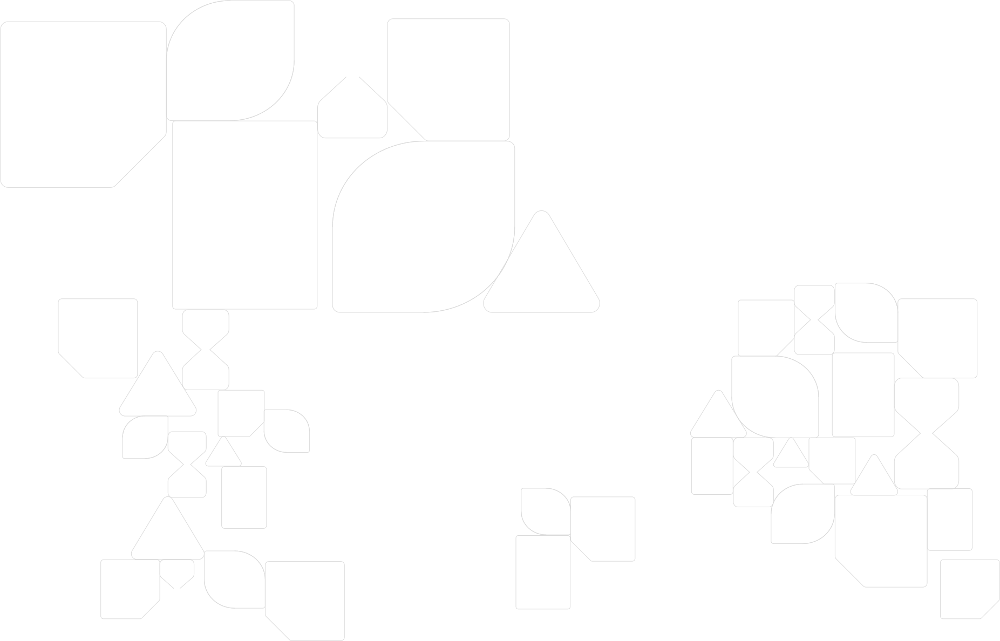

¿Por qué reciclar?
Reciclar es una de las acciones más simples que podemos hacer para cuidar el planeta… y una de las más poderosas.
No se trata solo de tirar algo en el contenedor correcto: es una forma de reducir el impacto ambiental, proteger los recursos y construir un futuro más sostenible.
Beneficios ambientales del reciclaje
 Ahorramos materias primas
Ahorramos materias primas
Reciclando los envases reutilizamos estos materiales, ahorrando estos recursos naturales y ayudando a conservar la naturaleza. Así ayudamos a generar enormes beneficios en todos los ámbitos. En el año 2023, gracias al reciclaje, 1.683.890 toneladas de envases han sido recicladas, lo que supone un 3,5% más respecto al año anterior y un 12% más que hace cinco años.
 Ahorramos agua y energía
Ahorramos agua y energía
En la extracción y transporte de las materias primas necesarias para crear nuevos productos se emplean grandes cantidades de agua y energía. Gracias al reciclaje, se produciría un ahorro de energía. Solo en 2023, la labor de reciclaje supuso el ahorro de 9,84 millones de MWH de energía; 15,53 millones de m3 de agua y evitó la emisión de 1,7 millones de toneladas de CO2 a la atmósfera.
Ya conocemos los efectos de los gases de efecto invernadero. Como comentamos anteriormente, al producir nuevos objetos a partir de materiales reciclados, evitamos la extracción de materias primas, lo que reduce las emisiones de gases contaminantes a la atmósfera y contribuye contra el cambio climático.
Creamos nuevos materiales
¿Sabías que se pueden construir bolardos y separadores de carril bici con materiales 100% reciclados? Reciclar puede contribuir a crear todo tipo de objetos, desde instrumentos, muebles, ropa, material de construcción-, y a aumentar su vida útil.
 Genera empleo verde
Genera empleo verde
Otros de los motivos que explica por qué es importante reciclar es porque genera empleo. La actividad de Ecoembes genera en España 42.600 puestos de trabajo. Y es que para desarrollar la labor del reciclaje se necesitan ecodiseñadores, trabajadores para las plantas de selección y tratamiento, educadores, ingenieros, y expertos en gestión de residuos, etc.
 Impacto del reciclaje en la conservación de recursos
Impacto del reciclaje en la conservación de recursos
El planeta posee unos recursos naturales finitos, y su explotación sin control amenaza la sostenibilidad ambiental. Esta es una situación insostenible a largo plazo, por lo que el reciclaje es una herramienta esencial para la conservación de estos recursos, ofreciendo una alternativa viable a la economía de usar y tirar.
El reutilizar materiales existentes a través del reciclaje, reduce significativamente el consumo de materias primas vírgenes. Lo que ayuda en la preservación de bosques, la protección de hábitats naturales y la conservación de recursos no renovables como el agua y los minerales.
El reciclaje además de disminuir la demanda de recursos naturales también alarga la vida útil de los productos. Cuando damos una segunda vida a los materiales, estamos evitando la necesidad de producir nuevos, lo que a su vez reduce la generación de residuos y la presión sobre el medioambiente.
Además de estos beneficios directos, el reciclaje también promueve el uso de materiales sostenibles. Incentiva el desarrollo y la utilización de materiales más duraderos y con menor impacto ambiental durante su producción, como aquellos provenientes de fuentes renovables.